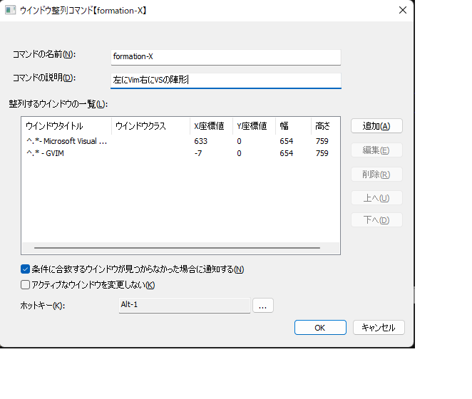
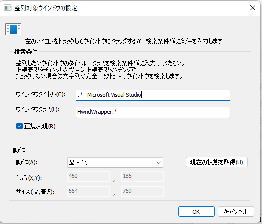

ウインドウ整列コマンド
ウインドウの位置とサイズを指定しておいて、一括設定するためのコマンド。
複数のウインドウの位置・サイズを指定することができるので、 普段よく使うアプリの「いつもの配置」を登録しておけば、それをすぐに再現することができる。
任意のウインドウに対し、位置・サイズ、表示状態(通常表示/最大化/最小化/非表示)を設定することができる。
非表示にすることもできるので、バックグラウンドで実行する必要がある一方で表示しておきたくないウインドウを隠す、という用途で使うこともできる。
設定画面

コマンドの名前
入力画面からコマンドを実行するためのキーワードコマンドの説明
コメント表示欄に記載される文字列。整列するウインドウの一覧
整列する対象とするウインドウの一覧を表示する
対象を追加・編集・削除したい場合は、右側にあるボタンから行う追加
クリックすると、検索対象とするウインドウを登録するための画面を表示する。編集
クリックすると、整列するウインドウの一覧で選択した項目の登録内容を変更するための画面を表示する。追加
クリックすると、整列するウインドウの一覧で選択した項目を削除する。上へ
クリックすると、整列するウインドウの一覧で選択した項目を一つ上に移動する。下へ
クリックすると、整列するウインドウの一覧で選択した項目を一つ下に移動する。条件に合致するウインドウが見つからなかった場合に通知する
チェックすると、コマンド実行時に登録したウインドウが見つからなかった場合にその旨を知らせるメッセージをポップアップ表示する。アクティブなウインドウを変更しない
チェックすると、コマンド実行前にアクティブだったウインドウが、コマンド実行後もアクティブなままになる。
チェックしない場合は、一覧の最も下にあるウインドウがアクティブになる。ホットキー
コマンドを呼び出すキーバインドを設定できる。設定したキーを押下するとコマンドを実行できるようになる。
例
電卓とペイントをあらかじめ決めた位置に並べる
{kind=link}
整列対象とするウインドウを登録する
ウインドウ整列コマンドに登録するためのウインドウの情報を入力するための画面。
タイトルとウインドウクラス名でウインドウを識別する。
対象とするウインドウのタイトルとウインドウクラス名を手入力するのは難しいので、画面上のアイコンを対象ウインドウにドラッグするのがおすすめ。
設定画面

検索条件
整列対象とするウインドウのウインドウタイトルとウインドウクラスを入力する。
画面左上にあるアイコンを整列対象としたいウインドウにドラッグすると、そのウインドウのウインドウタイトルとウインドウクラスを取得することができる。ウインドウタイトル検索対象とするウインドウのタイトルを指定する。
空欄にした場合はウインドウクラスのみで検索を行う
ウインドウクラス
検索対象とするウインドウクラスを指定する。
空欄にした場合はウインドウタイトルのみで検索を行う
ウインドウタイトルとウインドウクラスのどちらかを指定する必要がある正規表現
チェックした場合、ウインドウタイトルとウインドウクラスに入力した文字列を正規表現として扱う
チェックしない場合、ウインドウタイトルとウインドウクラスに入力した文字列の完全一致で探す
整列設定
整列対象とするウインドウの整列動作を入力する。
現在の状態を取得ボタンを押下すると、検索条件欄に指定した条件に合致するウインドウから、現在の状態(最大化 or 最小化 or 位置とサイズ)を取得する。動作
以下のいずれかを選択する位置・サイズを変更: ウインドウを指定した位置・サイズに移動&リサイズする最大化: ウインドウを最大化する最小化: ウインドウを最小化する非表示: ウインドウを非表示にする非表示にした場合、一般的な操作で表示状態に戻すことはできないので注意すること
位置(X,Y)
(位置・サイズを変更時)ウインドウの位置を指定する。サイズ(幅,高さ)
(位置・サイズを変更時)ウインドウのサイズを指定する。現在の状態を取得
検索条件欄に指定した条件に合致するウインドウの状態(最大化 or 最小化 or 位置とサイズ)を取得する。複数のウインドウが該当するときはすべてに対して適用する
チェックすると、検索条件欄に指定した条件に合致するウインドウが複数あった場合に、すべてのウインドウに対して適用する
実行時の動作
押下キー |
動作 |
|---|---|
|
ウインドウの整列を実行する |